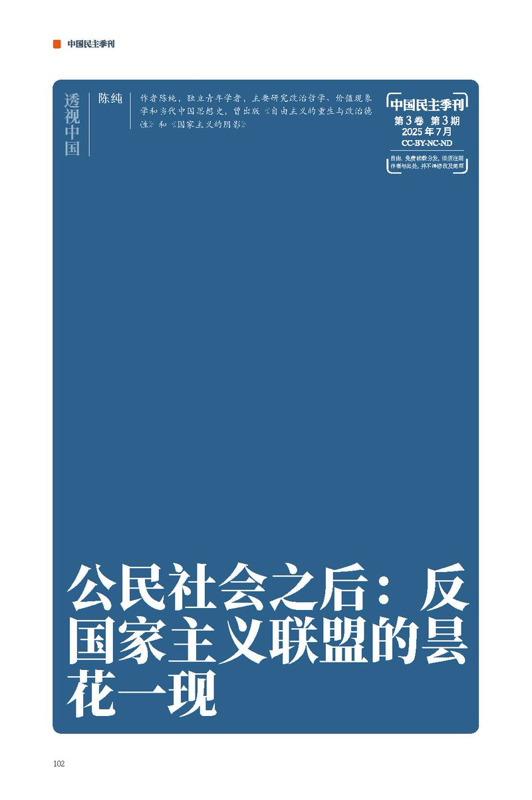

𝐀𝐬𝐡𝐥𝐞𝐲 𝐁𝐥𝐨𝐜𝐤🍥🌹🇹🇼🇪🇺🏳️⚧️
@bolckAshley
RT @chinatransition: 青年学者陈纯：当下有一些进步议题表面上呈现长驱直入的态势，实则埋藏着巨大隐患，当下青年人，不分阶级、性别和地域，都在这些议题上出现的保守化倾向，这应该给一些人敲响警钟。
年轻人怎么越来越保守了？按理说最有活力的群体反而正在趋向于保守，…

中国民主转型研究所(ICDT)
@chinatransition
青年学者陈纯：当下有一些进步议题表面上呈现长驱直入的态势，实则埋藏着巨大隐患，当下青年人，不分阶级、性别和地域，都在这些议题上出现的保守化倾向，这应该给一些人敲响警钟。
年轻人怎么越来越保守了？按理说最有活力的群体反而正在趋向于保守，这就像社会失去了前进动力，只好原地打转转。 https://t.co/IwnjFXrmvP